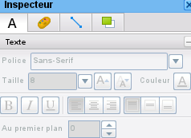
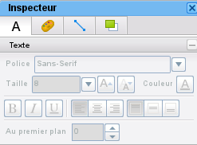

from SimpleXMLRPCServer import SimpleXMLRPCServer as Server import inspect import os import sys import ConfigParser # base path base_path = os.path.realpath(os.path.dirname(sys.argv[0])+"/../") # read config config = ConfigParser.RawConfigParser() config.read(base_path+"/parameters.ini") host = config.get("sikuli","xmlrpcHost") port = config.getint("sikuli","xmlrpcPort") # server class class SikuliServer(Server): # server loop def serve_forever(self): self.quit = 0 while not self.quit: self.handle_request() def dump_error(): print inspect.stack() print sys.exc_info()[0] print sys.exc_info()[1] print sys.exc_info()[2] # scenario steps def step_skeleton(): try: result = wait(,20) return 0 except: #dump_error() return 2 def check_inspecteur(): try: wait(,20) waitVanish(,20) return 0 except: #dump_error() return 2 def close_schema(): try: click(Pattern().targetOffset(180,0)) return 0 except: #dump_error() return 2 def check_schema_closed(): try: waitVanish(,20) return 0 except: #dump_error() return 2 # exit function def ext(): srv.quit = True return 0 # launch server try: srv = SikuliServer((host, port)) srv.register_function(step_skeleton) srv.register_function(check_inspecteur) srv.register_function(close_schema) srv.register_function(check_schema_closed) srv.register_function(ext,"quit") srv.serve_forever() except: dump_error() sys.exit(1)